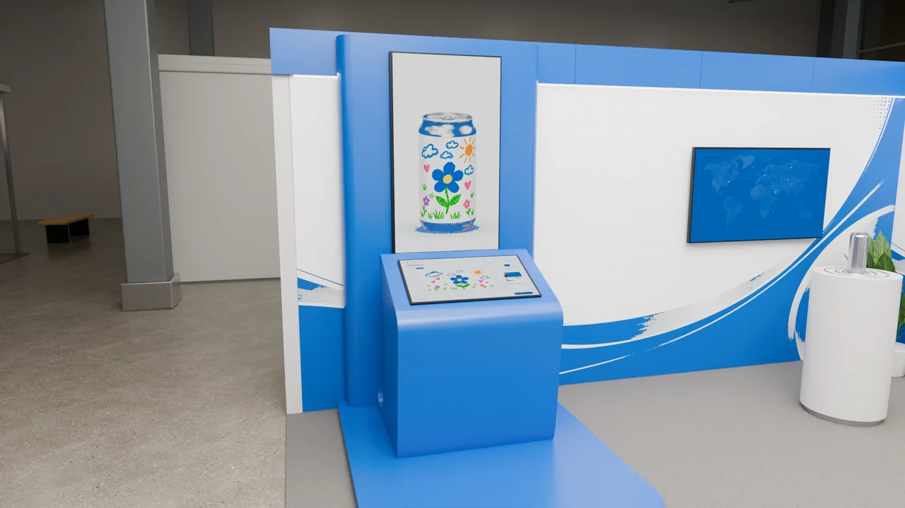
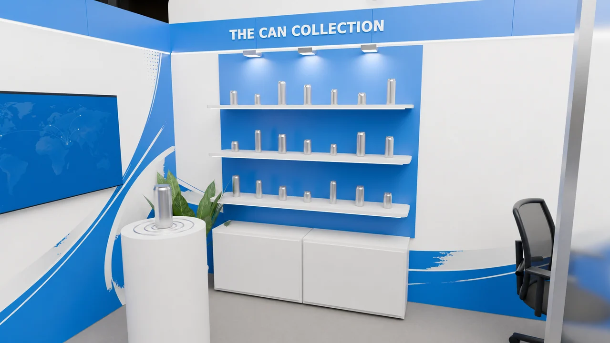
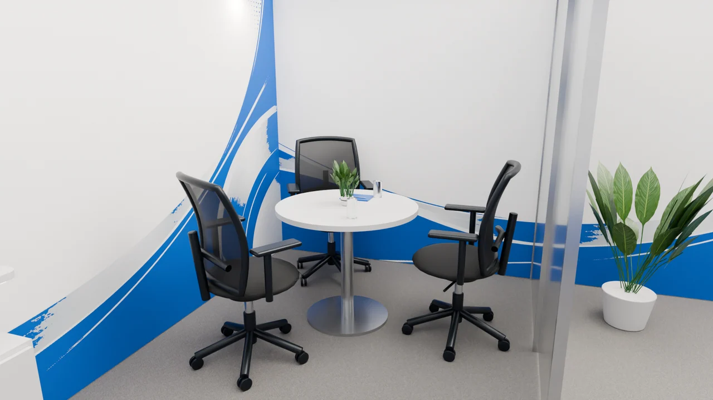
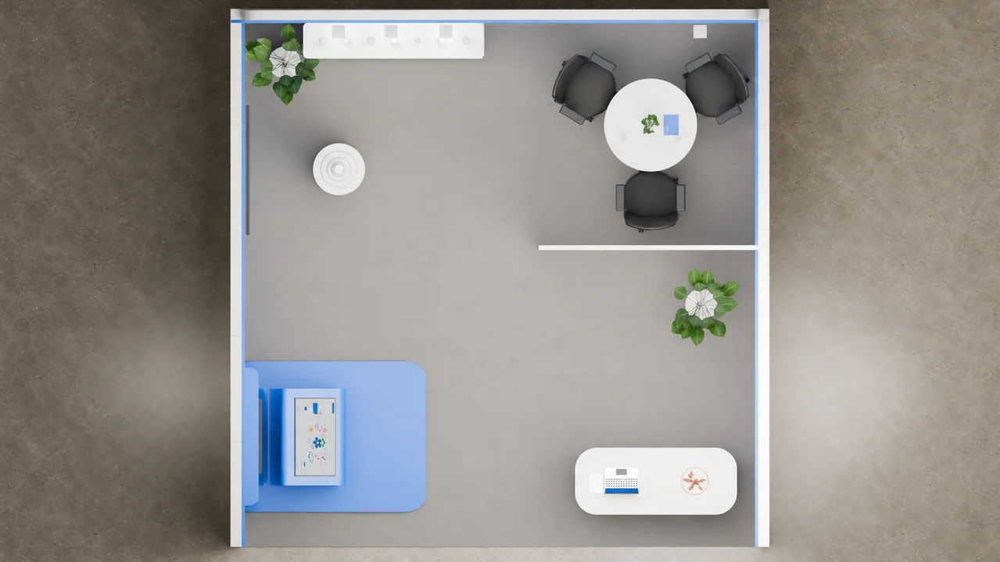
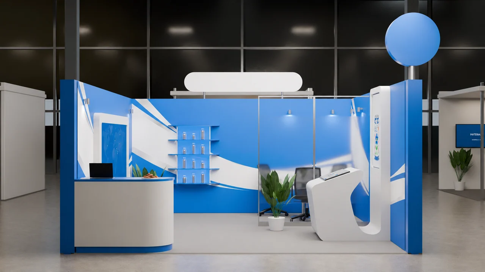
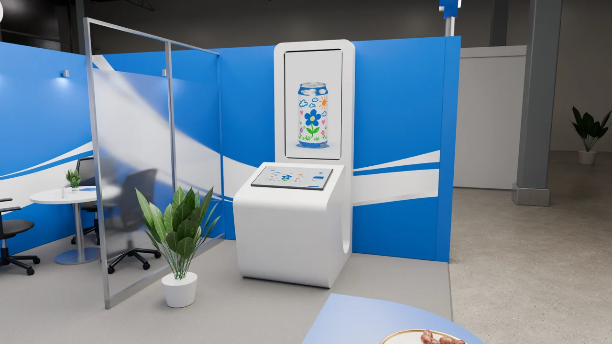
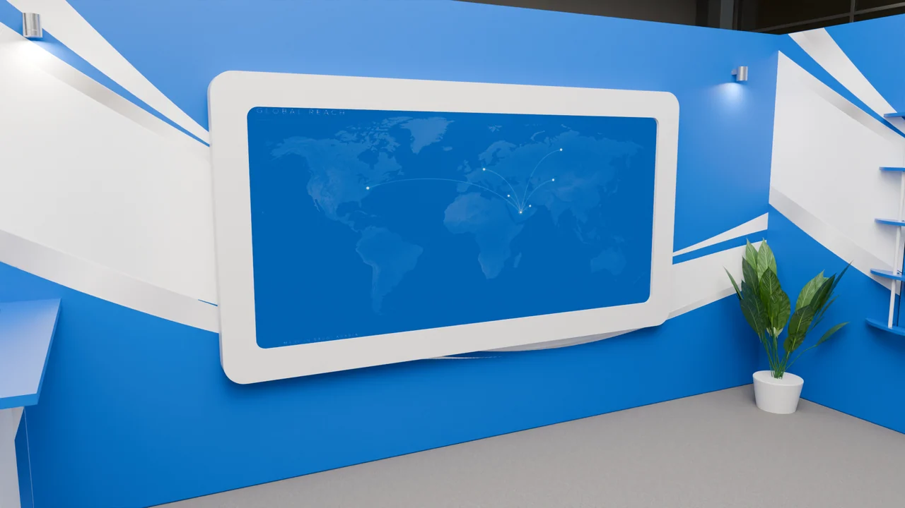
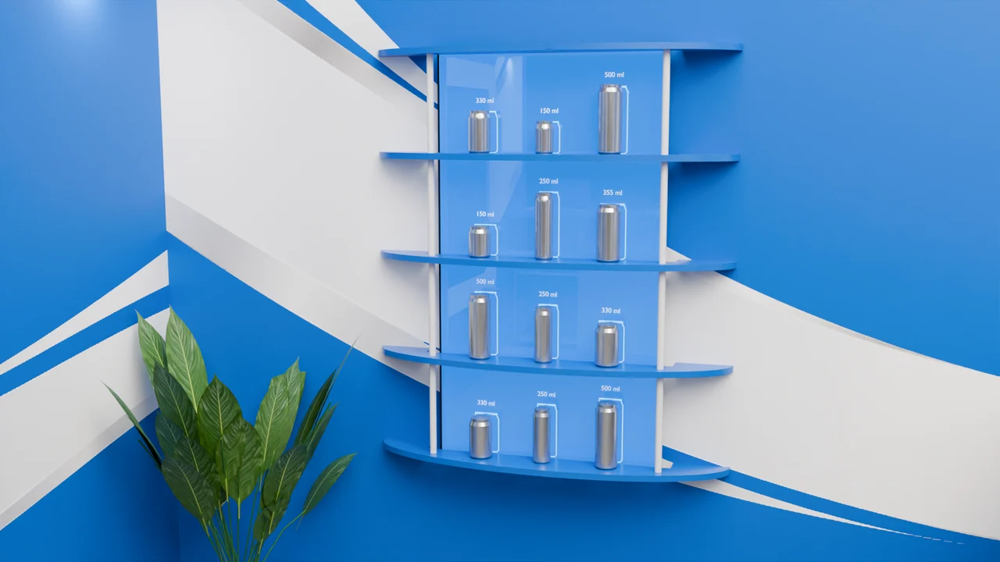
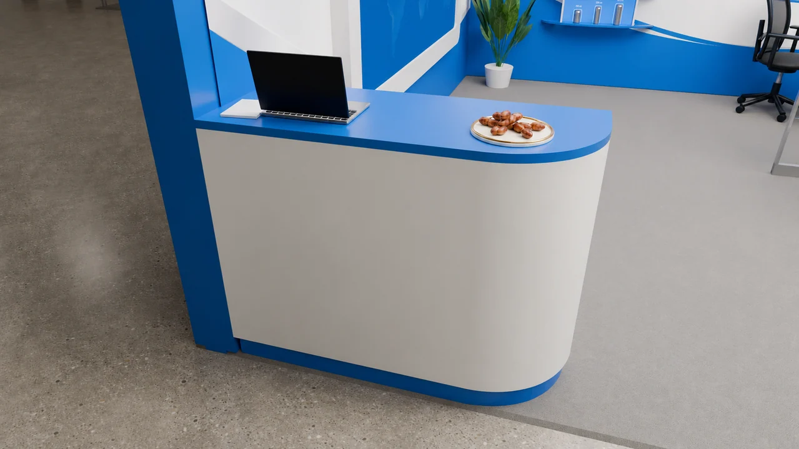
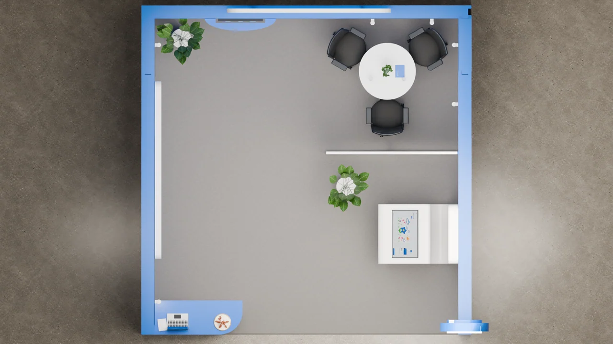

Texturing
Bring the blue-and-white surfaces, metal, glass and furnishings together so each material reads clearly in the image.
Two booth options, brought into focus through materials and rendered composition.
Explore the story
Present two supplied booth options clearly, from the complete space to the finishes and details within it.
I handled texturing, rendering and composition for these two booth options. The gallery brings together all eight views of B1 and all eight views of B2: overall perspectives, detail views and an overhead composition for each.
My work centered on how the supplied scenes read as images: blue and white surfaces, reflective metal, glass and the relationship between foreground details and the wider booth. B1 and B2 are presented as separate alternatives, without implying a sequence of design revisions.
Bring the blue-and-white surfaces, metal, glass and furnishings together so each material reads clearly in the image.
Use overall, frontal, detail and overhead views to explain each supplied booth option without relying on a single plan view.
Present a complete set of views for each option, showing material response across different distances and angles.
Two alternatives, eight views each. Explore a complete option below or jump directly to B1 or B2. The original compositions remain available in the image viewer.
16 / PROJECT IMAGES
Select a view to explore.
Blue kiosk, broad product shelving and a reception counter in front of the glass-divided meeting area. The following views present my texturing, rendering and composition of this supplied option.
An elevated view of option B1 shows the blue kiosk, product display, glass-divided seating and reception counter. My work focused on texturing, rendering and the final composition.
The full front view shows how the blue and white finishes, illuminated shelving and glass divider read together in the render.
A close view of the blue kiosk brings its curved material response, angled touch display and tall screen into focus.

The map screen and can display place reflective metal against the white plinth and blue-and-white wall treatment.
Rows of metal cans catch the display lighting against the blue panel, with white shelving and cabinetry below.

The meeting area combines dark chairs, a pale tabletop, metallic furniture bases and a glass partition.

A close composition of the reception counter shows its blue surface, pale top and soft edge reflections.
The top view completes option B1, showing how the rendered zones sit within the supplied booth layout.

White kiosk, compact curved product shelving and a blue-topped reception counter. This is a second supplied alternative, presented with the same focus on materials and rendered composition.
An elevated view of option B2 shows the white kiosk, curved reception counter, product shelves and meeting area in one complete render.
The front composition brings together the white kiosk, blue walls, compact shelving and glass-divided seating.

The kiosk’s pale surface is framed against saturated blue walls, with the two screen faces and their surrounding material edges visible.

A close view of the rounded screen surround shows the contrast between the white frame and blue wall finish.

The compact display groups metal cans on curved blue shelves, with capacity labels visible behind them.

The seating view focuses on dark upholstery, metallic supports, a pale tabletop and the surrounding blue-and-white surfaces.
The counter detail pairs a blue top and base with a curved white front, showing the surface shading across the form.

The top view completes option B2 and makes its supplied layout easy to compare with B1.

Structure, interaction and visual decisions that give the work its character.
RoleI was responsible for texturing, rendering and composition. This case does not claim booth design, original modeling, screen-interface development or authorship of the design alternatives.
AssetsBooth designs, models, screen artwork and branding are supplied elements; their authors retain their credits. My contribution is texturing, rendering and composition. Corporate marks were removed from portfolio copies using AI-assisted image editing; fine details may differ from the source renders. Originals remain intact.
StatusTwo rendered booth alternatives. This case presents visualization work; it does not establish fabrication, installation or a final client-selected option.